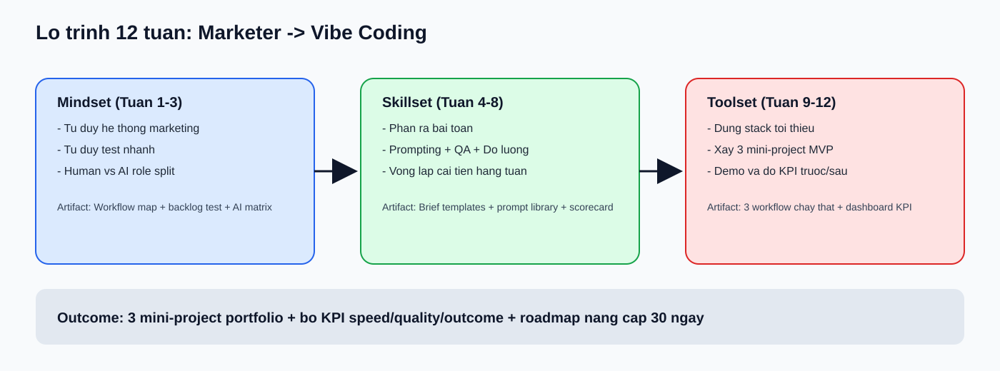
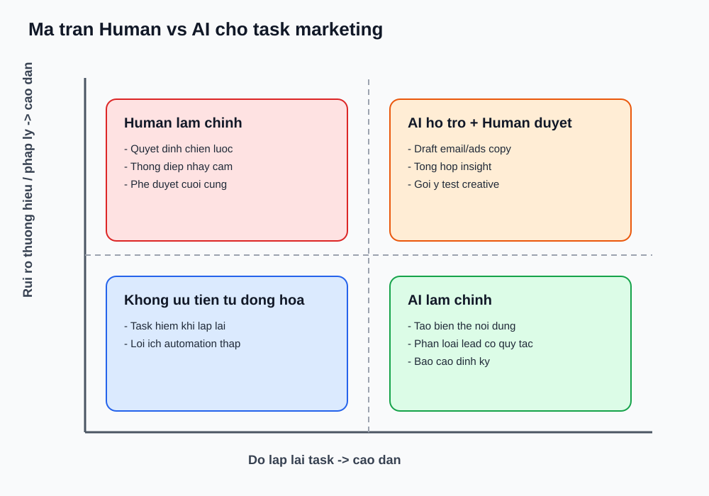
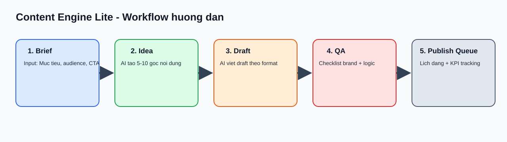
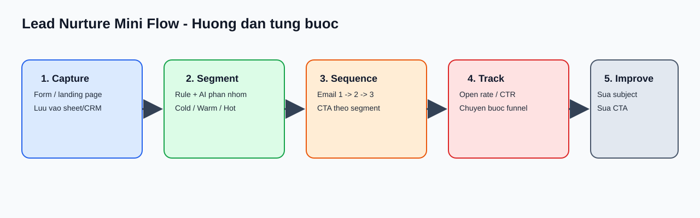

Mobile-first v3 + Full content loaded
Marketer -> Vibe Coding: học trực tiếp trên web
Toàn bộ nội dung khóa học đã được đưa vào trang này. Bạn có thể học theo thứ tự: Onboarding -> Mindset -> Skillset -> Toolset, theo nhịp 4-6 giờ/tuần.
Tiến độ học
0/12 tuần đã hoàn thành
Core Structure
3 Trụ Cột Cố Định
Mindset (Tuần 1-3)
Tư duy hệ thống, test nhanh, phân vai Human x AI.
Skillset (Tuần 4-8)
Phân rã bài toán, prompt thực dụng, QA, đo lường, retro.
Toolset (Tuần 9-12)
Dựng stack và triển khai 3 mini-project chạy thật.
Journey
Roadmap 12 Tuần

W1 System MapW2 Test MindsetW3 AI SplitW4 Brief Design
W5 Prompt OpsW6 QA LoopW7 KPI BaselineW8 Weekly Retro
W9 Stack SetupW10 Content EngineW11 Creative TrackerW12 Lead Nurture
0) Setup
Onboarding Trước Tuần 1
Mục tiêu
- Chốt business context và KPI nền để đo trước/sau.
- Cài stack tối thiểu để học liền mạch.
Checklist setup (90 phút)
- Tạo Google Sheet
VibeMarketing_CourseHubvới 4 tab:Workflow_Current,Hypothesis_Backlog,Prompt_Library,KPI_Baseline. - Tạo folder Drive
VibeCoding-Marketing. - Tạo tài khoản Make hoặc Zapier.
- Tạo dashboard Looker Studio kết nối sheet.
KPI baseline bắt buộc đo
Time-to-first-draft(phút/task)Weekly output consistency(số asset publish đúng lịch)Conversion proxy(CTR/open rate/lead-to-next-step)
Full Lessons
Nội Dung 12 Tuần
Tuần 1 - Tư duy hệ thống marketing
Mục tiêu: Nhìn marketing như dây chuyền vận hành thay vì danh sách việc rời rạc.
Bài giảng cốt lõi: Marketing là chuỗi Input -> Process -> Output -> Feedback.
- Liệt kê 1 quy trình thật bạn đang làm.
- Vẽ 5 bước: thu thập input -> ý tưởng -> draft -> review -> publish.
- Ghi thời gian thực tế từng bước.
- Đánh dấu bottleneck:
T(tốn thời gian),E(dễ sai),R(lặp lại cao).
Artifact: Workflow map + 5 bottleneck ưu tiên.
Rubric: 0 (chỉ list task), 1 (có luồng nhưng thiếu thời gian), 2 (đủ luồng + thời gian + bottleneck).
Tuần 2 - Tư duy thử nghiệm nhanh
Mục tiêu: Ra quyết định bằng test nhỏ có KPI thay vì cảm tính.
Framework: Hypothesis -> Test Design -> Success Metric -> Decision Rule.
- Tạo 10 giả thuyết theo message/format/CTA.
- Chấm điểm Impact x Ease x Speed.
- Chọn 3 giả thuyết ưu tiên.
- Viết rule kết luận: scale / iterate / drop.
Artifact: Hypothesis backlog + 3 test ưu tiên.
Rubric: 0 (không metric), 1 (có metric nhưng thiếu rule), 2 (đủ metric + threshold + next action).
Tuần 3 - Tư duy vận hành bằng AI

Mục tiêu: Phân vai rõ việc AI làm chính và việc Human giữ quyền quyết định.
- Lấy 20 task lặp lại từ tuần 1.
- Chia 4 nhóm: AI chính, AI hỗ trợ, Human chính, không automation.
- Chọn 3 task pilot automation cho tuần 9.
Artifact: Human vs AI responsibility matrix.
KPI: >= 30% task lặp lại nằm trong nhóm có thể automation.
Tuần 4 - Phân rã bài toán marketing
Mục tiêu: Chuyển request mơ hồ thành brief có thể giao việc và kiểm tra.
Brief 1 trang: Problem, Audience, Input data, Output format, Constraint, KPI.
Bài tập: Chuyển 3 task hiện tại thành 3 brief chuẩn.
Artifact: 3 file brief theo template.
KPI: 3/3 brief có output format và tiêu chí pass/fail.
Tuần 5 - Prompt thực dụng cho marketer
Mục tiêu: Viết prompt ổn định output, giảm trial-and-error.
Skeleton: Role + Context + Task + Constraint + Output format + Quality bar.
- Tạo 20 prompt theo 4 nhóm: research/content/ads/CRM-email.
- Mỗi prompt phải có 1 QA criteria.
Artifact: Prompt library (sheet + markdown).
KPI: Time-to-first-draft < 20 phút/task.
Tuần 6 - QA đầu ra AI
Mục tiêu: Giảm lỗi logic/nội dung/brand trước khi publish.
Checklist QA bắt buộc:
- Đúng dữ liệu và số liệu.
- Đúng brand voice.
- CTA rõ.
- Không vi phạm policy pháp lý/bản quyền.
- Đúng định dạng output.
Bài tập: QA 5 output AI và ghi % lỗi trước/sau.
KPI: Giảm lỗi sửa tay >= 40%.
Tuần 7 - Đo lường tác động
Mục tiêu: Chứng minh AI/automation có hiệu quả bằng số.
Công thức: Delta = (Sau - Trước) / Trước.
Nhóm KPI: Speed, Consistency, Outcome.
Bài tập: Tạo dashboard baseline + week delta.
Artifact: Dashboard theo dõi 3 KPI cốt lõi.
Tuần 8 - Cải tiến vòng lặp
Mục tiêu: Duy trì cải tiến hằng tuần thay vì học xong để đó.
Retro format: Keep / Stop / Improve + 2 action item có owner và due date.
Bài tập: Chạy 2 vòng retro liên tiếp, mỗi vòng >= 2 cải tiến đo được.
KPI: Mỗi tuần chốt >= 2 cải tiến có metric.
Tuần 9 - Dựng stack tối thiểu
Mục tiêu: Dựng xong stack cho luồng marketing có AI hỗ trợ.
Stack: ChatGPT + Google Sheets/Docs + Make/Zapier + Looker Studio.
Luồng mẫu: Brief -> AI draft -> QA -> Publish queue -> KPI logging.
- Tạo 1 trigger new row trong sheet.
- Tạo 1 action AI generate draft.
- Lưu kết quả về Docs/Sheet.
Tuần 10 - Mini Project 1: Content Engine Lite

Mục tiêu: Tự động hóa bán phần sản xuất content hằng tuần.
- Tạo sheet
content_briefsvới các cột chuẩn. - Tạo prompt template map vào cột sheet.
- Dùng automation: trigger row mới -> AI tạo idea -> AI tạo draft -> ghi vào
content_outputs. - QA bằng checklist tuần 6.
- Đẩy vào lịch đăng.
KPI: Giảm >= 30% thời gian sản xuất nội dung tuần.
Tuần 11 - Mini Project 2: Creative Test Tracker

Mục tiêu: Chuẩn hóa test loop để tăng tốc học từ creative.
- Tạo bảng
creative_testsvới các cột hypothesis, variant, KPI target, result, decision. - Tạo rule auto-label: keep / iterate / drop.
- Tạo AI weekly summary: top winners, top fails, bài học.
KPI: Tăng >= 2x số vòng test/tháng.
Tuần 12 - Mini Project 3: Lead Nurture Mini Flow

Mục tiêu: Tạo mini funnel nuôi dưỡng lead có đo lường cơ bản.
- Tạo source capture lead (form/landing).
- Segment theo rule cold/warm/hot.
- Tạo sequence 3 email: welcome, social proof, CTA.
- Ghi tracker open rate, CTR, step conversion.
- Retro sau 7 ngày.
KPI: Có đủ 3 metric email + funnel step.
Capstone
3 Project Blueprint
Project 1 - Content Engine Lite
Problem: Sản xuất nội dung thủ công, thiếu nhất quán.
Success metric: giảm >= 30% thời gian sản xuất.
Project 2 - Creative Test Tracker
Problem: Test creative thiếu hệ thống, không lưu bài học.
Success metric: tăng >= 2x vòng test/tháng.
Project 3 - Lead Nurture Mini Flow
Problem: Lead vào nhưng thiếu chuỗi chăm sóc nhất quán.
Success metric: theo dõi open rate, CTR, step conversion.
Videos & Docs
Track học theo video
Mindset (Tuần 1-3)
Skillset (Tuần 4-8)
Toolset (Tuần 9-12)
Mẹo học không quá tải
- Lần 1: xem x2 tốc độ, ghi 3 điểm hành động.
- Lần 2: vừa xem vừa thao tác trên project thật.
- Sau mỗi video: cập nhật 1 action vào checklist tuần.
Completion
Điều kiện hoàn thành khóa
- Có 3 mini-project MVP.
- Mỗi project có >= 2 KPI trước/sau.
- Có demo script 5 phút/project.
- Có roadmap nâng cấp 30 ngày.